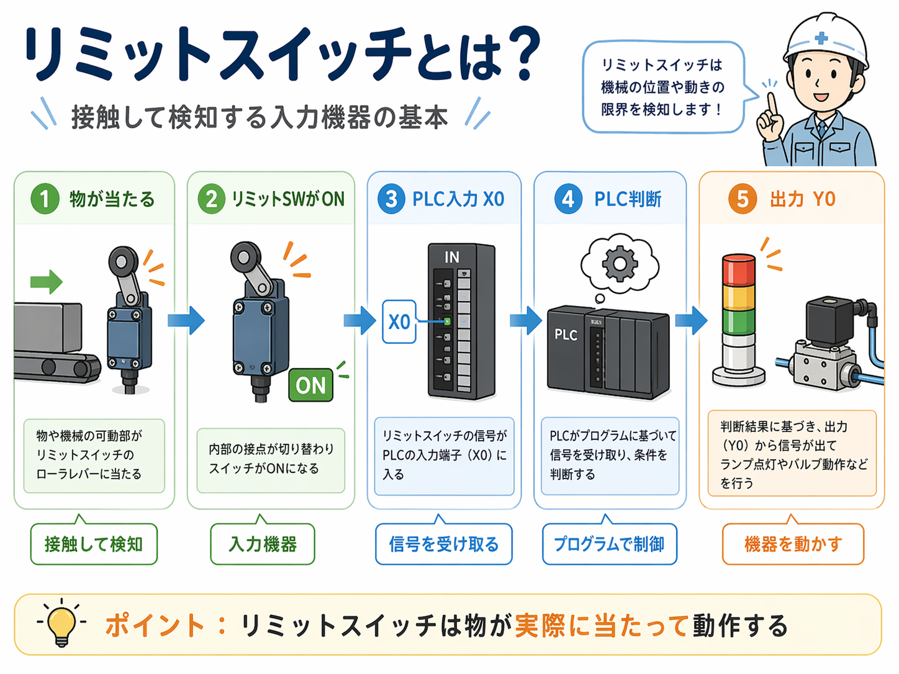
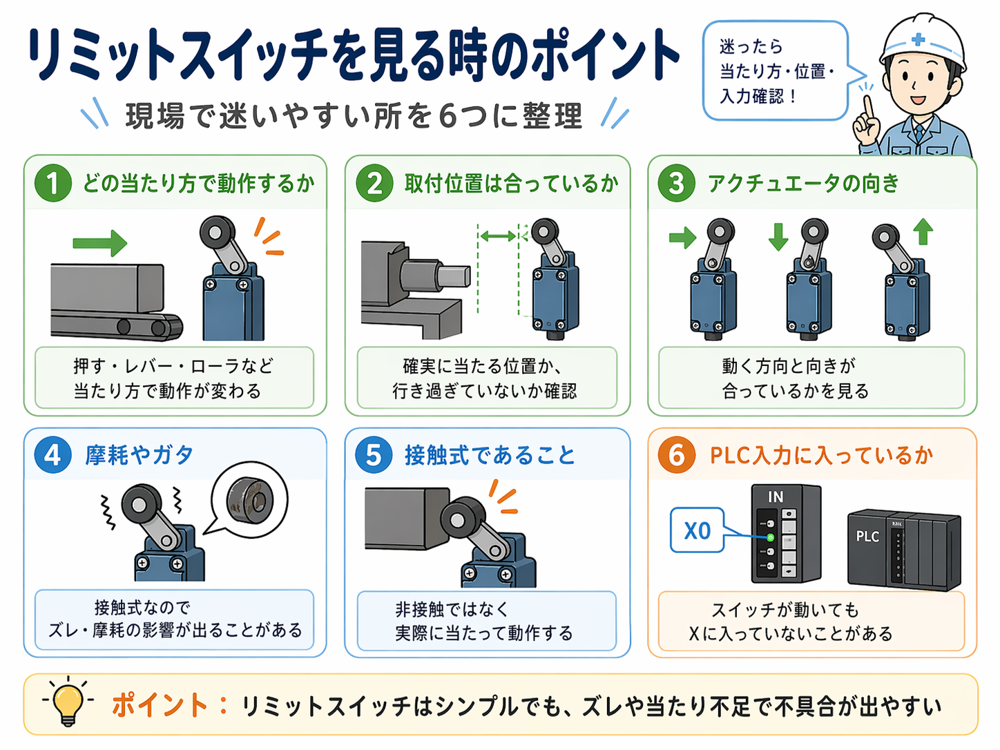

リミットスイッチは「物が当たって動作する」接触式のスイッチです
リミットスイッチは、機械やワークの一部がレバーやローラなどに当たることで接点が切り替わり、ON/OFF信号を出す機器です。
つまり、何かが近づいたことを非接触で見るのではなく、 実際に当たって動作している のが大きな特徴です。
物が当たる → PLC入力 → 判断 → 出力の流れで見ると分かりやすいです
実務では、リミットスイッチだけで終わらず、 その信号がPLCへ入り、そのあと何が動くか までセットで見ることが多いです。

- 物や機械の一部が当たる
- リミットスイッチ内部の接点が切り替わる
- スイッチの信号がPLC入力（例：X0）へ入る
- PLCが条件に応じて判断する
- ランプや電磁弁などの出力が動く
端位置・扉開閉・シリンダ位置確認でよく使います
リミットスイッチは、物が確実に当たる位置を取りたい時に使いやすいです。たとえば次のような場面でよく見ます。
端位置確認
シリンダが前進端・後退端まで来たかを見る時によく使います。
扉やカバーの開閉確認
開いた・閉じた位置を物理的に取りたい時に使いやすいです。
原点検出
装置の基準位置や初期位置を取る用途でも使われます。
確実に当てたい場面
非接触より、実際に当たって確認したい時に向いています。
現場ではこの6つを見るとかなり整理しやすいです
リミットスイッチがうまく動かない時や、取付で迷う時は、まずこの6つを見ると原因を絞りやすいです。

押す・レバーを押す・ローラで当てるなど、当たり方で動作が変わります。
物が確実に当たる位置か、行き過ぎていないかを確認します。
レバーやローラの向きが動く方向と合っているかが大事です。
接触式なので、使っていくうちに摩耗やズレが出ることがあります。
物に当たって動くので、衝撃が大きすぎたり高速すぎたりすると不安定になることがあります。
スイッチが動いていても、PLCの入力Xに入っていないことがあります。
近接センサとの違いは「接触か、非接触か」で見ると分かりやすいです
リミットスイッチと近接センサは、どちらも位置や有無を取りたい時に出てきますが、考え方ははっきり違います。
リミットスイッチ
接触して検知します。物に実際に当てて、端位置や動作位置を確実に取りたい時に向いています。
近接センサ
非接触で検知します。金属などが近づいたことを見たい時に使いやすいです。
ざっくり分けると、
- 実際に当てて位置を取りたい → リミットスイッチ
- 近づいたことを非接触で見たい → 近接センサ
という整理にすると入りやすいです。
リミットスイッチでよくある疑問
A. はい、基本は入力です。接触して得た状態をPLCへ伝える側だからです。
A. どちらが良いかではなく、何をどう取りたいかで変わります。実際に当てて確実に位置を取りたいならリミットスイッチが向いています。
A. スイッチの当たり方、接点の切り替わり、PLC入力X、ラダー条件を順に見ると整理しやすいです。
次に読むとつながりやすい記事
リミットスイッチの基本が見えてきたら、次はセンサ全体・近接センサ・光電センサと合わせて読むと整理しやすいです。